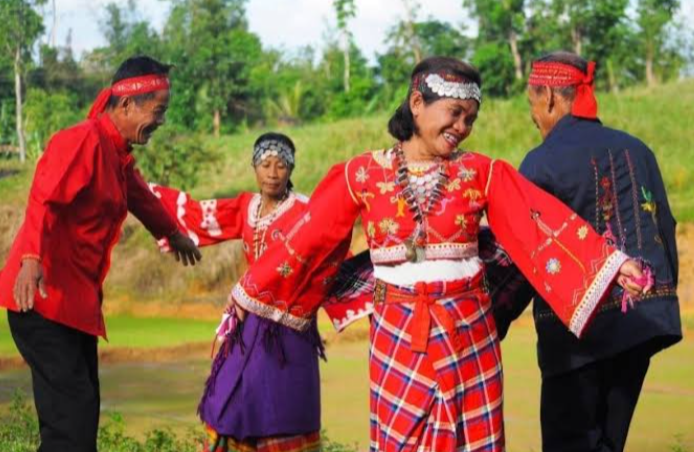
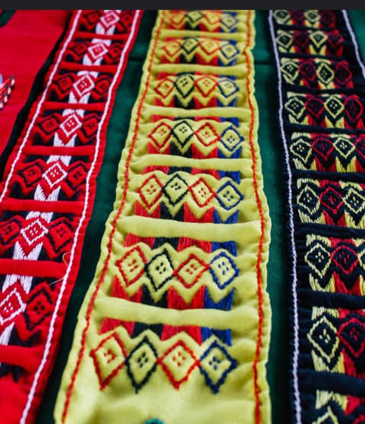

Panay Bukidnon


The Bukidnons of Calinog, Iloilo are the descendants of the Malay communities of the area who moved up to the hinterlands to defy Spanish attempts to subjugate them, or they are in fact natives of the place long before the coming of the Spaniards. The same conclusion should emanate – They are Indigenous.